Overview
A Jenkins CI/CD pipeline helps automate your build, test, and deployment process, so you can get changes from your code repository to your environment faster and with less manual work.
STEP 01Log In to Jenkins
First, log in to Jenkins. This is where you’ll create, configure, and keep an eye on your jobs and pipelines.
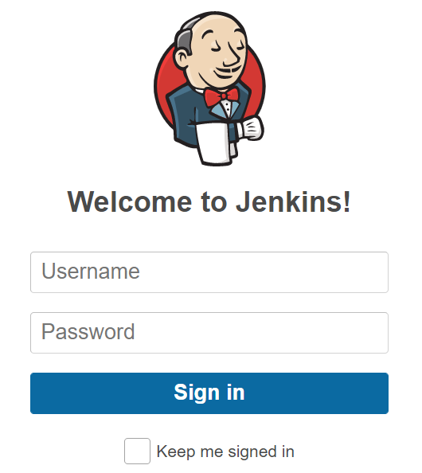
STEP 02Redirected to the Jenkins Dashboard
After you log in, Jenkins takes you to the dashboard. From here, you can manage your jobs, pipelines, and other settings.
STEP 03Create a New Project
From the Jenkins dashboard, click "New Item" to start creating a new project, then choose the project option you need.
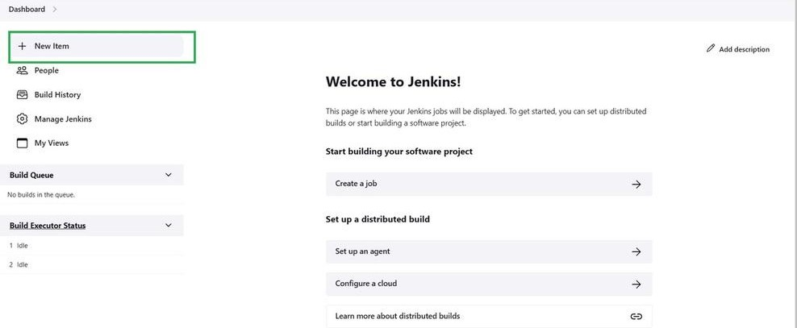
STEP 04Configure the Project Type
On the next screen, you’ll see a few project options and a field for the pipeline name. Give your pipeline a clear name, select "Pipeline," and continue.
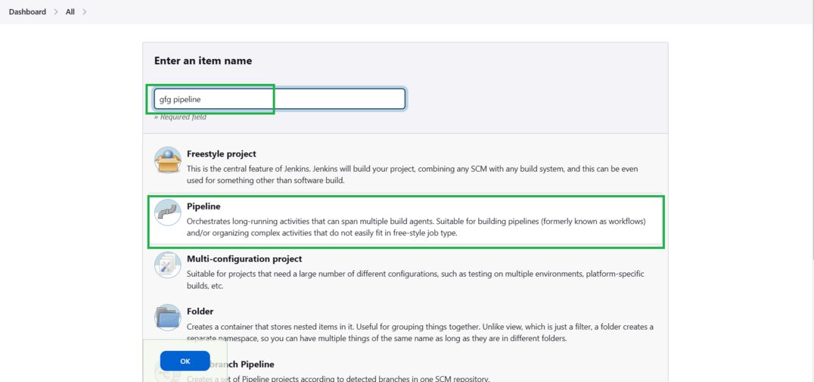
STEP 05Configure the General Section
The pipeline configuration page will open. In the General section, you can add the basic details for your pipeline:
- Add a short description so it’s easy to understand what the pipeline is for.
- Set up the connection to your repository so Jenkins can access the project and trigger the pipeline.
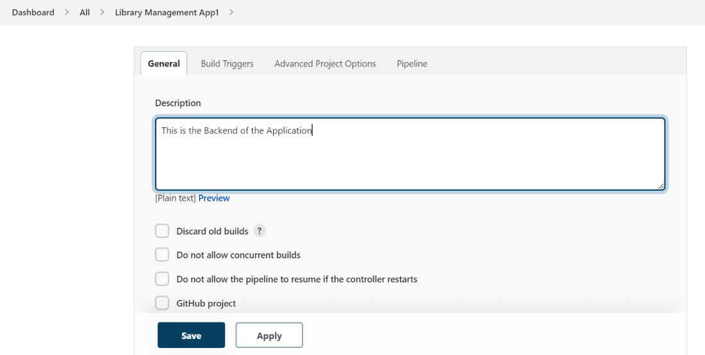
STEP 06Set Build Triggers
In Build Triggers, choose the branch and repository you want Jenkins to use and add the required credentials. You can also add extra options if your project needs them.
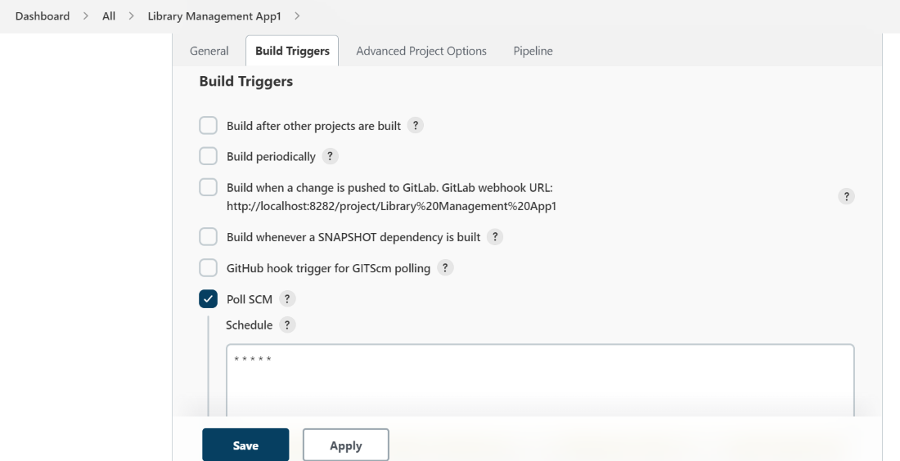
If you want Jenkins to run the pipeline on a schedule, you can use cron syntax here.
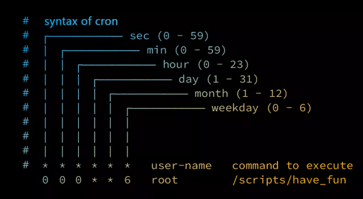
STEP 07Advanced Project Options
This section is for advanced settings and special pipeline options. If you don’t need anything extra, you can simply leave it as it is.
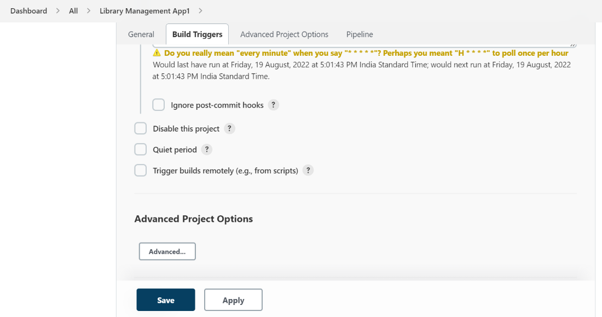
STEP 08Configure the Pipeline Section
This is where you tell Jenkins how to run your pipeline. In the Pipeline section:
- Add the Jenkinsfile that Jenkins will use to build, test, and deploy your application.
- Choose where Jenkins should get the pipeline script from, such as your repository or a local file.
- Add any required credentials or the path to your Jenkinsfile.
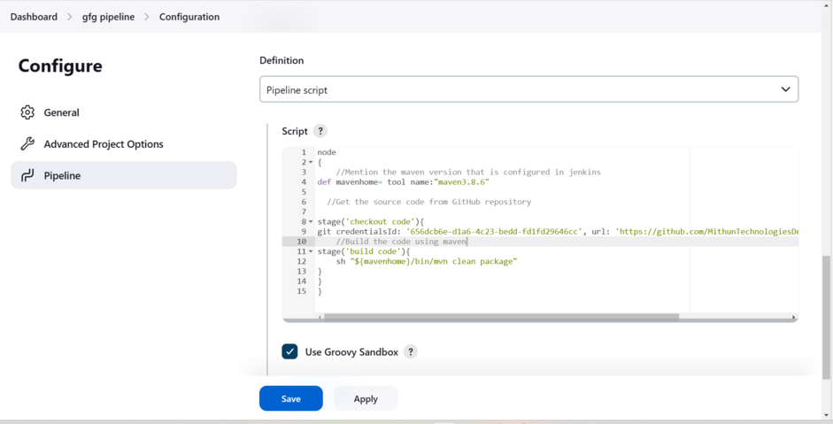
Sample Jenkins Pipeline Script
pipeline {
agent any
stages {
stage('Checkout') {
steps {
echo 'Checking out source code...'
// Example: checkout scm
cleanWs()
}
}
stage('Parallel Builds') {
parallel {
stage('Build 1') {
steps {
echo 'Running Build 1...'
}
}
stage('Build 2') {
steps {
echo 'Running Build 2...'
}
}
stage('Build 3') {
steps {
echo 'Running Build 3...'
}
}
}
}
}
post {
always {
echo 'Always: This runs regardless of the build outcome.'
}
changed {
echo 'Changed: This runs only if the current build status is different from the previous build.'
}
fixed {
echo 'Fixed: This runs if the current build is successful and the previous build failed or was unstable.'
}
regression {
echo 'Regression: This runs if the current build failed, was unstable, or aborted, while the previous build was successful.'
}
aborted {
echo 'Aborted: This runs if the build was manually stopped or timed out.'
}
failure {
echo 'Failure: This runs if the build step or overall pipeline status is failed.'
}
success {
echo 'Success: This runs if the pipeline completes successfully.'
}
unstable {
echo 'Unstable: This runs if test failures or other issues mark the build as unstable.'
}
unsuccessful {
echo 'Unsuccessful: This runs if the build is not successful (captures failure, aborted, and unstable states).'
}
cleanup {
echo 'Cleanup: This runs after all other post conditions have executed, regardless of the outcome.'
}
}
}
STEP 09Save the Pipeline and Run It
Once your pipeline is ready, click Save. Jenkins will take you back to the project dashboard. Click "Build Now" to run it and check the result using Stage View or Console Output.
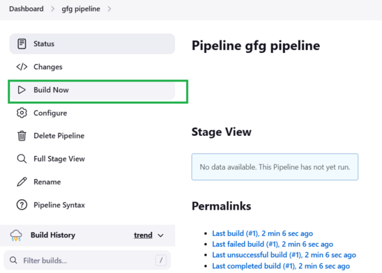
STEP 10Monitor the Pipeline Execution
Once the pipeline starts, you can watch it as it runs. Open your project from the Jenkins dashboard, then select the build you just started under Build History.
- Stage View: Shows each pipeline stage visually, so you can quickly see what’s running, completed, or failed.
- Console Output: Shows the detailed logs from each stage and is especially useful when you need to troubleshoot an issue.
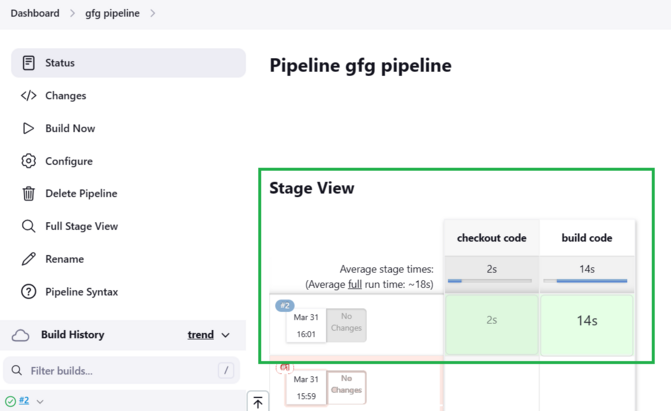
STEP 11Review the Build Status
At the bottom of the Console Output or Stage View, you’ll see how the pipeline finished:
- Success: If everything runs without errors, you’ll see "Finished: Success."
- Failure: If a stage fails, the logs will show the error details, which makes it easier to find and fix the problem.
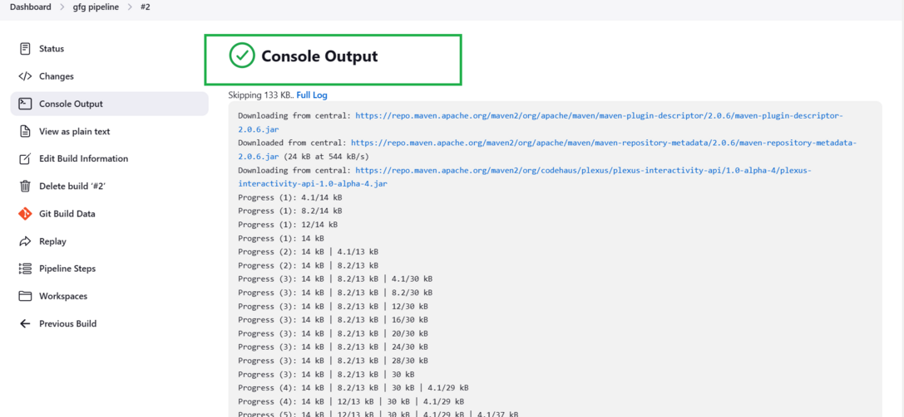
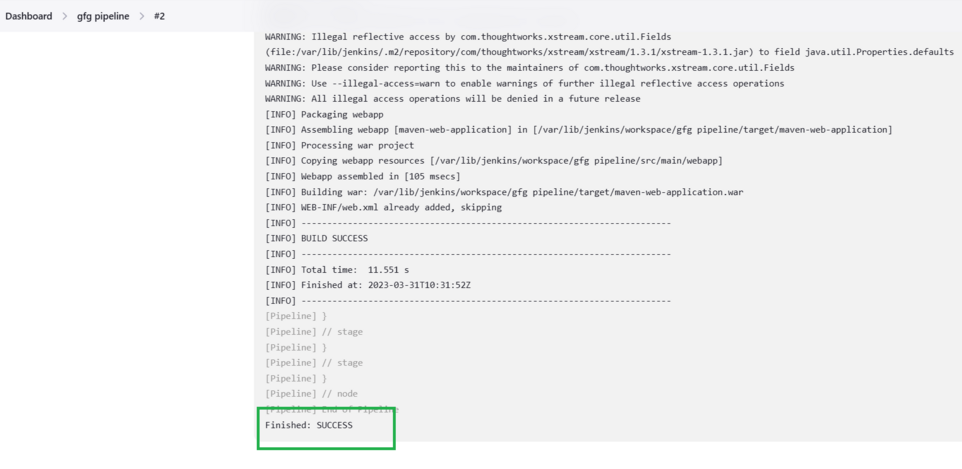